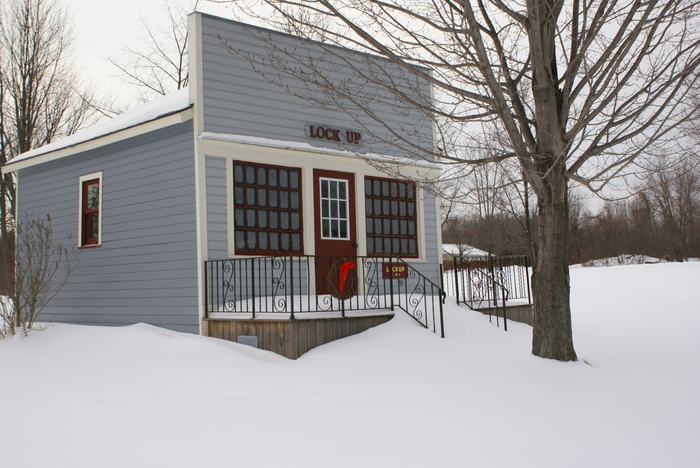

Lock Up

This building has served many uses. In 1895, it was the site of the Ontario Center Boot & Shoe Shop, located just east of the Fire Hall in Ontario Center and owned by John Freeh. The cobbler was always extremely busy repairing shoes in those early days. When Mr. Freeh was appointed postmaster in 1897, he had his post office in this building as well. In 1903, it also served as a barber shop owned by George Miller. He was a justice of peace as well as a shoemaker. In 1919, it was moved from Ridge Road to Ontario Center Road and turned into the town Lockup (Jail). The land for the jail was leased from James Conner for $6.00/year.
The building was donated to the Historical Society by Willis (Bill) and Christine Butler and moved to Heritage Square on December 1, 1992.
Building Must-See: Jail Cell!
| The Heritage Square Museum is owned and operated by The Town of Ontario Historical and Landmark Preservation Society. Copyright 2023 |